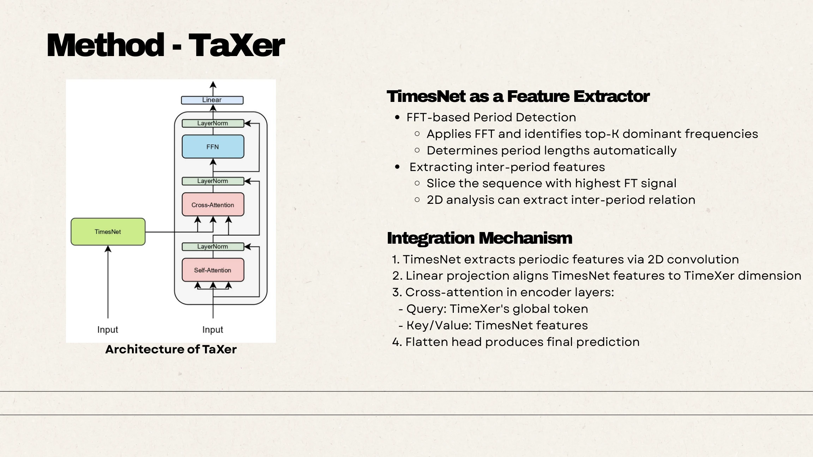
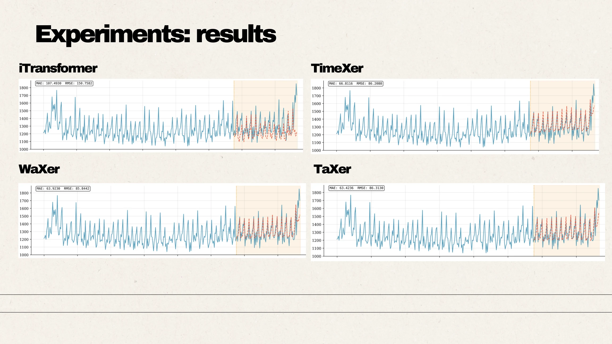

Time-Series Learning
TaXer and WaXer: Time-Series Forecasting
Introduction to Deep Learning · SNU · 2025 · Course Project
Combine a transformer forecaster with periodic or dilated-convolution temporal features.

Motivation
Temporal feature extractors encode different assumptions about a sequence. This course project compares periodic and convolutional features within a transformer forecasting pipeline.
- TaXer: Use FFT-selected periods and two-dimensional convolution.
- WaXer: Use dilated causal convolutions as an alternative temporal prior.
My contribution
Team project with Jinwoo Seo, Hyeonseop Shin, and Manyoung Han. The architectures and reported experiments were developed by the team.
Model architecture
1. TaXer: period-aware features
Use TimesNet-style FFT analysis to identify dominant periods in the input sequence.
- Period alignment: Reshape the sequence according to each selected period.
- Feature extraction: Apply 2D convolution to capture variation within and across periods.
2. Transformer integration
Project the extracted temporal features into the transformer embedding dimension.
- Sequence branch: Create variable-wise patch embeddings and a global token.
- Feature branch: Broadcast the projected temporal context across variables.
- Cross-attention: Let the sequence representation query this temporal context.
- Forecast head: Produce predictions and restore each variable’s original scale.
temporal features → linear projection → cross-attention context
3. WaXer: convolutional alternative
Replace the periodic extractor with WaveNet-style dilated causal convolutions.
- Shared interface: Retain the projection and transformer integration pattern.
- Comparison: Evaluate forecast error and model size for the alternative temporal prior.
Experiments
Sticker Sales results from the course-project report. Lower MSE is better.
| Model | MSE |
|---|---|
| TimeXer | 0.1647 |
| TaXer | 0.1569 |
The report also compares weather forecasts and model sizes under the project’s experimental setup.
